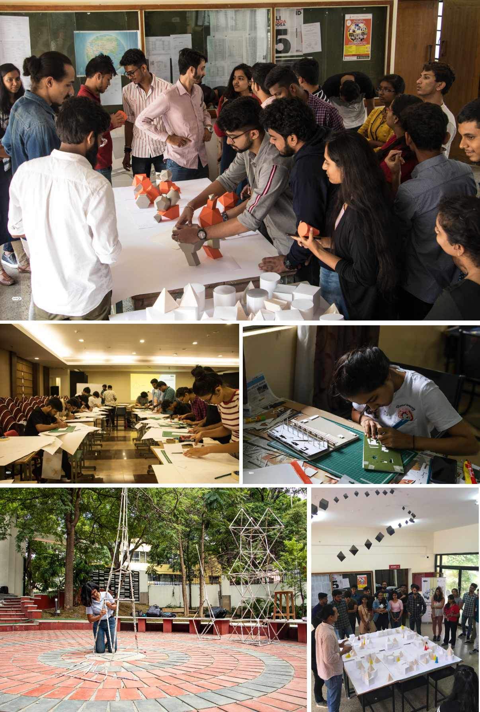
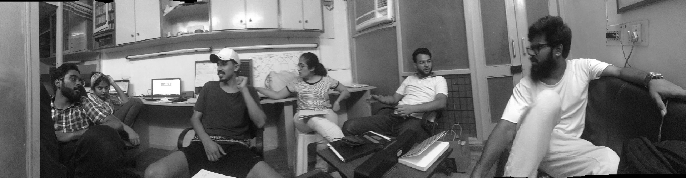

An attempt to learn python + fiddling with robotics by replicating a device shown in the 'Rick and morty' TV series. Unfortunately, we had to abandon this in project later.
Duration: 4 Weeks(Team of 2) Tools used: Sketchup, Python
RoboticsDataArtPython
Inspiration
In the summer of 2019, with 3 other classmates we tried setup a company ‘Oneistox’ (read one:X) from scratch.
Our focus was to create unique learning environment for students that acted as a bridge between students and mentors , An idea to host offline workshops hosted across major cities in India bringing students and mentors together
Over the course of 2 months. we designed and developed interfaces, payment portals, marketing, advertisement and execution over the span of two months
Glimpses of our workshop
We designed and developed interfaces, payment portals, marketing, advertisement and execution over the span of two months.
Our first workshop 'Physical Model Making workhsop' trailer
To begin with, we started with introducing ‘Physical Model making workshops’ across three cities at New Delhi, Mumbai and Bengaluru.
We successfully completed the workshops in July and generated revenue to kick-start the business for our further workshops. You can check the brief here.

Glimpses of our workshop
The company has further grown to conduct 35+ offline workshops across 10+ cities in India. It has partnerships with prestigious institutions and companies during the journey.
Challenges and Learnings
In today’s world, social media beats everything in advertising. Its more accurate, quick to execute and ability to iterate and create user-group targeted advertisements makes it better than any other medium.
The return on investment using social media advertisement is extremely high.
Its comparatively hard and time consuming to finish procedures for tax filing, registering an entity, opening bank accounts, for a new company
One can create immense trust in a product by partnering with established institutions and people.
Growth(website visitors/workshop participants) coming only from advertisements is highly unsustainable. Same goes for rewards and prizes.
Tried and tested formulas quickly get copied and implemented by many.
Great visuals = Good sales
Don’t give up until the end
It takes multiple triggers and approaches to convince someone to buy a product.
Reputation comes from good visual communication. Nobody thinks twice, if the visual looks good
Its just not enough to create a valuable product, until you know how to sell them
Pack stuff well for transport if trying to move them geographically.
The most common questions in workshops is ‘what next’ rather than why ‘why’

The only photograph of the office, before I left the company
The company has further grown to conduct 35+ offline workshops across 10+ cities in India. It has partnerships with prestigious institutions and companies during the journey. You can check more with the below links